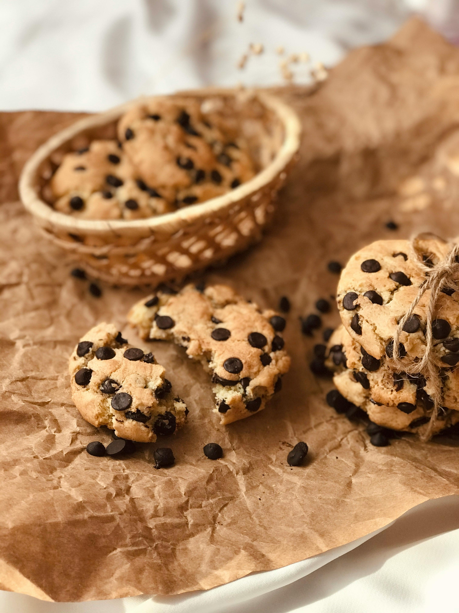

Chocolate Chip Cookies
Description
These Chocolate Chip Cookies are the ultimate study in contrasting textures: they feature perfectly crisp,
golden edges with a soft, gooey center. Every bite is loaded with melty chocolate pockets and rich notes of
caramelized brown sugar, butter, and vanilla.
Whether you like them warm from the oven or saved for an
afternoon snack, these cookies offer that classic, nostalgic flavor with a sophisticated, chewy finish.
Ingredients
- 1 cup butter, softened
- 1 cup white sugar
- 1 cup packed brown sugar
- 2 large eggs
- 2 teaspoons vanilla extract
- 1 teaspoon baking soda
- 2 teaspoons hot water
- ½ teaspoon salt
- 3 cups all-purpose flour
- 2 cups semisweet chocolate chips
- 1 cup chopped walnuts (Optional)
Direction
- Gather your ingredients, making sure your butter is softened, and your eggs are room temperature.
- Preheat the oven to 350 degrees F (175 degrees C). Beat butter, white sugar, and brown sugar in a large bowl with an electric mixer until smooth and creamy.
- Beat in eggs, one at a time, then stir in vanilla.
- Dissolve baking soda in hot water; add to batter along with salt and mix until combined.
- Stir in flour, chocolate chips, and walnuts until a soft dough forms.
- Drop rounded spoonfuls of cookie dough 2 inches apart onto un-greased baking sheets.
- Bake in the preheated oven until edges are lightly browned, about 10 minutes.
- Cool on the baking sheets briefly before removing to a wire rack to cool completely.
- Store in an airtight container or serve immediately and enjoy!